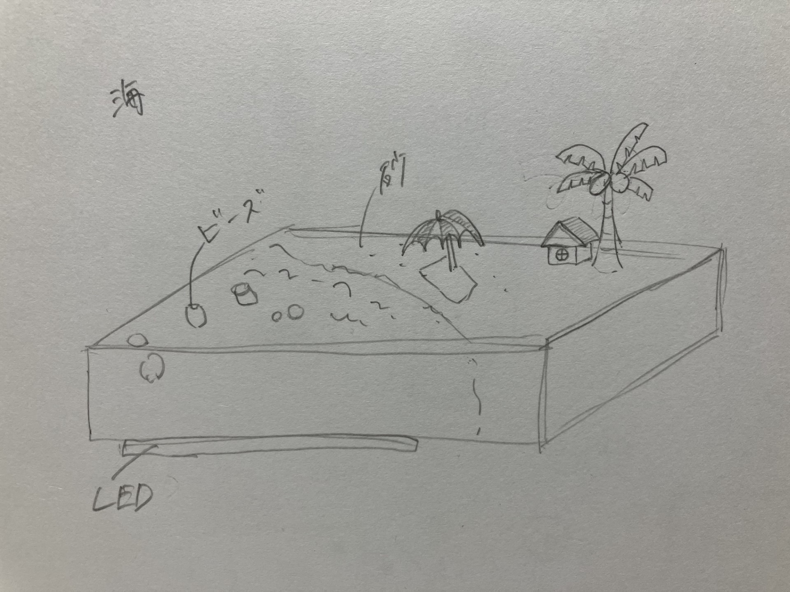

project note
アイディアのスケッチ

概要
プロセスメモ
■…考えないといけないこと、疑問
→考えたこと、解決したこと
●…これからやること
・やったこと、解決したこと
■何を作るか
→LEDを使って、海の色が変わるメディアアートを作る。
■何が必要か
→マイコンボード、LED、透明な箱、ビーズ、砂、家やヤシの木などの模型
・ビーズと砂を購入し、ビーズの色分けをした。
●LEDをグラデーションに光らせる方法を調べる。
●LEDをどのように箱に設置したら海全体がきれいに光るか考える。
●模型を作る。
・LEDの色を一秒ごとに変化させるプログラムを考えた。
■５個のLEDを同時に光らせて徐々に色が変わるようにしたかったが、なぜか順番に点灯した後に点滅するようになった^^;
→海のキラキラした感じが再現できそうなのでこのまま進めることにした。
■光り方は変えられたが、色が変えられなくなった。
●色が変わるようにプログラムを書き換える。
■模型をどの素材でどのように作るか
→最初は３Dプリンターで作ろうと思っていたけど、アクリルの方がオシャレにできそうなのでレーザーカッターを使って作る。
・Fashion365を使ってヤシの木と浮き輪と船の模型の図を作成した。
●実際にレーザーカッターで模型を作る。（色も付けられるといいかも？）
・レーザーカッターで模型を作った。
・ファブラボにTAKEFREEの船の模型があったので使わせてもらうことにした^^
●アクリルで作った模型に色を付ける。
・LEDの色が徐々に変わるプログラミングを書いた。
・透明な箱に砂やビーズを入れてみて、LEDの光が当たった時にきれいに光るか試した。
使用したもの
マイコンボード、LED、透明な箱、ビーズ、砂、家やヤシの木などの模型
紹介動画